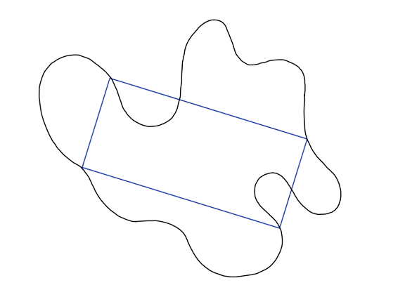
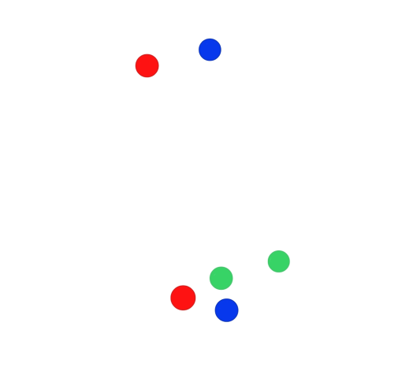
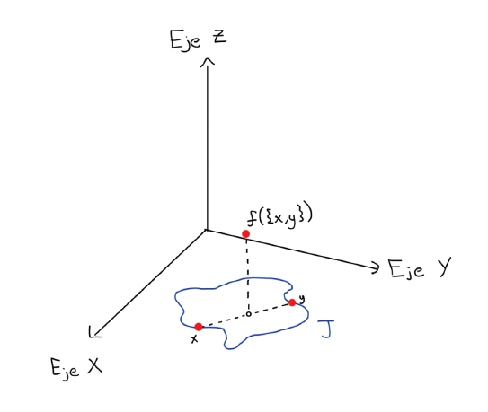
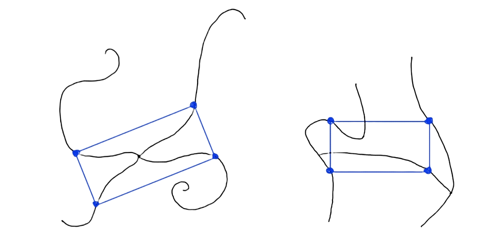
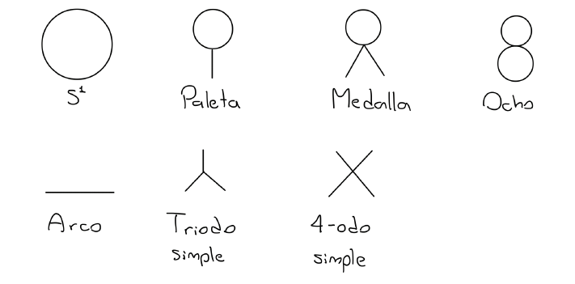

Rectángulos Inscritos
Una curva de Jordan es un encaje (un homeomorfismo en su imagen) \(\gamma: S^1 \to \mathbb{R}^2\) , donde \(S^1\) es la circunferencia de radio 1 con cetro en el origen (en el plano). En ocasiones diremos curva de Jordan para referirnos a la imagen de un encaje \(\gamma: S^1 \to \mathbb{R}^2\). Cuando hablemos de una curva de Jordan como un subconjunto del plano, usualmente la denotaremos por \(J\).
En 1911 el matemático Otto Toeplitz planteó el siguiente problema:
¿Toda curva de Jordan \(\gamma\) admite un cuadrado inscrito (i.e. su imagen contiene los cuatro vértices de algún cuadrado)?
A este problema se le conoce como el problema del cuadrado inscrito, o como la conjetura de Toeplitz. A día de hoy este problema sigue abierto, pues nadie ha podido demostrar que esto se cumple para cualquier curva de Jordan (hay curvas muy extrañas, como algunas que no son diferenciables en ningún punto). Se sabe que la conjetura es cierta para ciertas curvas, como las curvas suaves, curvas convexas, curvas simétricas respecto a un punto, entre otras (ver sección de cuadrados inscritos). En general, en los casos resueltos se pide a la curva que cumpla alguna condición extra. Pero hay un resultado relacionado que se cumple para cualquier curva de Jordan:
Toda curva de Jordan \(\gamma\) admite un rectángulo inscrito (i.e. su imagen contiene los cuatro vértices de algún rectángulo) - (Vaughan 1977).
El siguiente link es de un video de 3blue1brown, con animaciones muy buenas, en el que habla sobre este resultado: link al video. También, en la pestaña de Las curvas de Jordan inscriben rectángulos se da una prueba similar a la de Vaughan. Si quiere ver una idea de la prueba original puede hacer click en el siguiente link: Prueba de Vaughan.
Probaremos que toda curva de Jordan admite un rectángulo inscrito. Sea \(\gamma\) una curva de Jordan, y pongamos \(J=\gamma (S^1)\). Consideremos el espacio de subconjuntos de \(J\) con a lo más dos puntos \(F_2(J) = \{\{x,y\}:x,y\in J\}\) con la métrica de Hausdorff. Con la métrica de Hausdorff, intuitivamente, dos elementos de \(F_2(J)\) estarán cerca si casi se enciman.
Por ejemplo, en la imagen anterior la pareja de puntos azules está cerca de la pareja de puntos rojos porque casi se enciman. Otra manera de ver que estas parejas están cerca es notando que sólo hay que mover los puntos rojos un poco para que la pareja de puntos rojos coincida con la de los puntos azules. Con esta idea de cercanía, la pareja de puntos verdes está lejos de las otras dos parejas.
Resulta que si consideramos a \(F_2(J)\) con ésta métrica, resulta ser homeomorfo a una banda de Möbius, y el conjunto que consta de los singletones (que son los subconjuntos de \(J\) con un solo elemento), \(F_1(J)=\{\{x\}:x\in J\}\), corresponde al borde de la banda de Möbius. Ver detalles.
Ahora, consideremos la función \(f:F_2(J) \to \mathbb{R}^3\) dada por $$f(\{x,y\}) = \left( \frac{x+y}{2},d_e(x,y) \right) = \left( \frac{x_1 + y_1}{2},\frac{x_2 + y_2}{2},d_e(x,y) \right)$$ Lo que hace esta función es que a cada pareja de puntos \(x,y\) de la curva \(J\) (también a los de la forma \( \{x,x\} \) ) le asigna un punto \(f(\{x,y\})\) en \(\mathbb{R}^3\). Las dos primeras coordenadas de \(f(\{x,y\})\) corresponden al punto medio de \(x\) y \(y\), mientras que la tercera coordenada es la distancia euclidiana entre \(x\) y \(y\):
Notemos que si \(\{x,y\}\) y \( \{a,b\} \) son parejas de puntos distintas con el mismo punto medio y tales que \(d_e(x,y) = d_e(a,b)\) entonces estos cuatro puntos forman un rectángulo (prueba de este hecho). Así, procediendo por contradicción, si suponemos que \(\gamma\) no admite ningún rectángulo inscrito entones \(f\) debe ser inyectiva, y como también es continua entonces es un encaje. Esto implica que la imagen de \(f\) es una copia topológica de \(F_2(J)\), y ya mencionamos que este es homeomorfo a una banda de Möbius, de modo que \(f(F_2(J)) = M\) es una banda de Möbius en \(\mathbb{R}^3\). Además, existe un teorema que nos asegura que la imagen del borde bajo un encaje es igual al borde de la imagen, y aplicado a nuestro caso quiere decir que el borde de \(M\) es \(f(F_1(J))\) (pues ya vimos que \(F_1(J)\) corresponde al borde de la banda de Möbius \(F_2(J)\)). Más aún, como \(f(F_1(J))\) está contenido en el plano \(XY\) (pues la distancia de un punto a si mismo es 0) entonces \(M\) es una banda de Möbius en \(\mathbb{R}^3\) que se queda arriba del plano \(XY\) y su intersección con dicho plano es solamente su borde.
Acomodar una banda de Möbius de tal forma no es posible. Una manera de ver esto es reflejar \(M\) respecto al plano \(XY\) para obtener otra banda de Möbius \(M_r\). Luego, \(K = M\cup M_r\) consta de dos bandas de Möbius pegadas por sus bordes en \(\mathbb{R}^3\). Al espacio que se obtiene de pegar dos bandas de Möbius por sus bordes de esta manera se le conoce como botella de Klein, y se sabe que las botellas de Klein no se pueden meter en \(\mathbb{R}^3\), por lo que la existencia de \(K\) es una contradicción.
La contradicción se dió por suponer que \(\gamma\) no admitía ningún rectángulo inscrito. Por tanto, toda curva de Jordan admite un rectángulo inscrito.
Decimos que un rectángulo de base \(b\) (el lado más largo) y altura \(h\) tiene razón \(h/b\). El problema del rectángulo inscrito plantea que toda curva de Jordan admite al menos un rectángulo inscrito de razón \(r\) para cada \(r\in (0,1]\). Este problema es una generalización del problema del cuadrado inscrito, pues en particular los cuadrados son rectángulos de razón 1.
Hasta hace poco ni si quiera se sabía si esta conjetura era cierta para curvas suaves. En 2020 Joshua Evan Green y Andrew Lobb probaron que, en efecto, las curvas de Jordan suaves inscriben rectángulos de cualquier razón, su resultado fue publicado en Annals of Mathematics en 2021 (referencia 2). Para ello usaron que no existe un encaje lagrangiano de la botella de Klein en \(\mathbb{R}^4\). Poco después generalizaron bastante su resultado. Procediendo de manera similar demostraron que las curvas de Jordan suaves inscriben todo tipo de cuadriláteros cíclicos (cuadriláteros que se pueden inscribir en una circunferencia), es decir que si \(J\) es una curva de Jordan y \(C\) es un cuadrilátero cíclico entonces \(J\) admite al menos un cuadrilátero inscrito que es semejante a \(C\).
Otro caso en el que se sabe que ésta conjetura es cierta es cuando la curva es simétrica respecto a un punto (ver detalles).
Ya vimos que toda curva de Jordan \(\gamma: S^1 \to \mathbb{R}^2\) admite un rectángulo inscrito, i.e. que su imagen contiene los cuatro vértices de algún rectángulo. Podemos resumir esto diciendo que \(S^1\) inscribe rectángulos. Ahora, una pregunta natural es si esta propiedad es exclusiva de \(S^1\) o si habrá otros continuos del plano que también inscriban rectángulos. En otras palabras, ¿para qué continuos \(X\subset \mathbb{R}^2\) se cumple que todo encaje \(\gamma: X \to \mathbb{R}^2\) admite un rectángulo inscrito? o ¿para que continuos \(X\subset \mathbb{R}^2\) se cumple que sin importar cómo los deformemos (sin romper ni pegar) en el plano siempre contienen los cuatro vértices de algún rectángulo?
Por ejemplo, el arco \([0,1]\times \{0\}\) no inscribe rectángulos, pues a pesar de que hay maneras de deformarlo de modo que sí admita un rectángulo inscrito, existe una manera (de hecho infinitas maneras) de deformarlo de manera que no admita ningún rectángulo inscrito. Por ejemplo, dejándolo como está (con la función identidad) es un segmento recto, que claramente no admite ningún rectángulo inscrito.
Otro ejemplo de un continuo que no inscribe rectángulos es el triodo simple, pues existe un encaje (una manera de deformarlo en el plano) que no admite ningún rectángulo inscrito, por ejemplo cualquier encaje cuya imagen tenga la forma de la letra T.
Por otro lado, un ejemplo sencillo de un espacio que inscribe rectángulos es cualquier espacio con interior no vacío. Sin embargo, hay espacios para los que no es trivial determinar si inscriben rectángulos o no, por ejemplo, ¿será cierto que el espacio con forma de letra X inscribe rectángulos? o ¿el espacio con forma de letra H inscribirá rectángulos?
En 2020 Morales y Villanueva demostraron que si \(X\subset \mathbb{R}^2\) es un continuo que no inscribe rectángulos, i.e. que existe un encaje \(\gamma:X\to \mathbb{R}^2\) que no admite ningún rectángulo inscrito, entonces \(X\) es un arco (un espacio homeomorfo al intervalo [0,1]) o un triodo simple (un espacio homeomorfo al continuo con forma de letra T).
Para ello procedieron de manera similar a Vaughan. Dado un continuo \(X\subset \mathbb{R}^2\) y un encaje \(\gamma: X \to \mathbb{R}^2\), pongamos \(Y=\gamma(X)\) y consideremos la función continua \(f_\gamma:F_2(Y) \to \mathbb{R}^3\) dada por $$f_\gamma(\{x,y\}) = \left( \frac{x+y}{2},d_e(x,y) \right) = \left( \frac{x_1 + y_1}{2},\frac{x_2 + y_2}{2},d_e(x,y) \right)$$ donde \(F_2(Y)\) es el espacio de subconjuntos de \(Y\) con a lo más dos puntos con la métrica de Hausdorff, conocido como el segundo producto simétrico de \(Y\). Notemos que esta es la misma función usada en la prueba para las curvas de Jordan, pero con diferente dominio, de modo que con un razonamiento similar llegamos a que si \(\gamma\) no admite ningún rectángulo inscrito entonces \(f_\gamma\) es inyectiva y por tanto \(F_2(Y)\) se puede encajar en \(\mathbb{R}^3\). Como \(F_2(X)\) y \(F_2(Y)\) son homeomorfos (pues \(X \cong Y\)) entonces \(F_2(X)\) también se puede encajar en \(\mathbb{R}^3\).
En resumen, si un continuo \(X\) no inscribe rectángulos entonces su segundo producto simétrico, \(F_2(X)\), se puede encajar en \(\mathbb{R}^3\). Así, si queremos saber si un continuo plano \(X\) inscribe rectángulos, es conveniente ver si \(F_2(X)\) se puede meter en \(\mathbb{R}^3\). Este es un tema que ha sido estudiado ampliamente en la teoria de continuos e hiperespacios, y un resultado que es de particular interés para lo que estamos haciendo fue obtenido por E.Castañeda [referencia 5], el cual dice que si \(X\) es un continuo localmente conexo tal que su segundo producto simétrico se puede meter en \(\mathbb{R}^3\) entonces \(X\) se puede encajar en el continuo que tiene forma de 8 y por tanto debe ser homeomorfo a uno de los continuos de la siguiente imagen:
De esto se sigue que si \(X\) es un continuo plano localmente conexo que no inscribe rectángulos entonces su segundo producto simétrico se puede encajar en \(\mathbb{R}^3\) y por tanto debe ser homeomorfo a uno de los siete continuos de la imagen de arriba. Como \(S^1\) inscribe rectángulos, \(X\) no puede ser homeomorfo a ninguno de los continuos de la fila de arriba, pues cada uno de estos cuatro contiene una copia topológica de \(S^1\). Además, en [referencia 1] Morales y Villanueva probaron que el 4-odo simple también inscribe rectángulos, por lo que si un continuo plano localmente conexo no inscribe rectángulos entonces debe ser un arco o un triodo simple.
- Benjamin Matschke, A survey on the square peg problem, Notices Amer. Math. Soc. 61 (2014), no. 4, 346352.
- J. Greene and A. Lobb, The rectangular peg problem, Ann. of Math. (2) 194 (2021), no. 2, 509–517
- J. Greene and A. Lobb, Cyclic quadrilaterals and smooth Jordan curves, arXiv:2011:05216 (2021)
- Morales-Fuentes, Ulises; Villanueva-Segovia, Cristina, "Rectangles Inscribed in Locally Connected Plane Continua", Topology Proceedings, 58: 37–43 (2021)
- Enrique Castañeda, Embedding symmetric products in Euclidean spaces in Continuum Theory (Denton, TX, 1999). Ed. Alejandro Illanes, Sergio Macías, and Wayne Lewis. Lecture Notes in Pure and Applied Mathematics, 230. New York: Dekker, 2002. 6779.